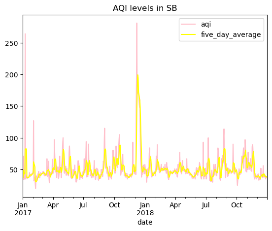
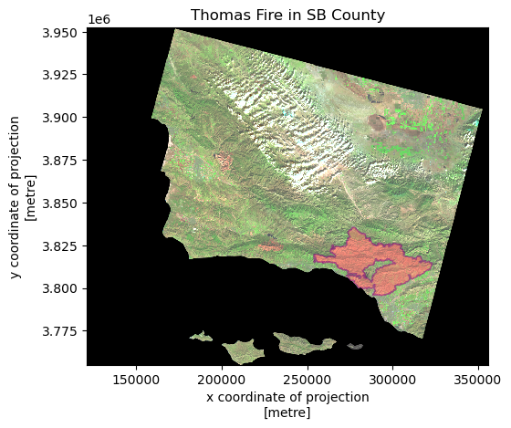

In this notebook, we use Air Quality Index (AQI) data from the US Environmental Protection Agency to visualize the impact on the AQI of the 2017 Thomas Fire in Santa Barbara County. We also will create a false color image showing the fire scar of the Thomas fire in 2017.
Highlights
Fetch vector data from an online repository
Data wrangling and exploration of with pandas
Geospatial data wrangling with geopandas
Creating and customizing a line plot
Creating and customizing a false color image
Dataset description
In this notebook we use three datasets:
Air Quality Index (AQI) data from the US Environmental Protection Agency
The first dataset contains information about EPA’s index for reporting air quality.
For each pollutant an AQI value of 100 generally corresponds to an ambient air concentration that equals the level of the short-term national ambient air quality standard for protection of public health. AQI values at or below 100 are generally thought of as satisfactory. When AQI values are above 100, air quality is unhealthy: at first for certain sensitive groups of people, then for everyone as AQI values get higher.
The AQI is divided into six categories. Each category corresponds to a different level of health concern.
Landsat data
The second dataset is a simplified collection of bands (red, green, blue, near-infrared and shortwave infrared) from the Landsat Collection 2 Level-2 atmosperically corrected surface reflectance data, collected by the Landsat 8 satellite.
Information about Landsat bands from USGS:
What are the band designations for the Landsat satellites? -Common Landsat Band Combinations
-How do I use a scale factor with Landsat Level-2 science products?
The data was accessed and pre-processed in the Microsoft Planetary Computer to remove data outside land and coarsen the spatial resolution (Landsat Collection in MPC). Data should be used for visualization purposes only.
Shapefile of fire perimeters
The third dataset is a shapefile of fire perimeters in California during 2017. The complete file can be accessed in the CA state geoportal here: https://gis.data.ca.gov/datasets/CALFIRE-Forestry::california-fire-perimeters-all-1/about
References to datasets
AirNow. (2021b). Air Quality Index (AQI) Basics. Retrieved from www.airnow.gov website: https://www.airnow.gov/aqi/aqi-basics/
Wikipedia Contributors. (2019, October 6). Thomas Fire. Retrieved from Wikipedia website: https://en.wikipedia.org/wiki/Thomas_Fire
California Fire Perimeters (all). (n.d.). Retrieved November 29, 2023, from gis.data.ca.gov website: https://gis.data.ca.gov/datasets/CALFIRE-Forestry::california-fire-perimeters-all-1/about
Microsoft Planetary Computer. Planetary Computer. (n.d.). https://planetarycomputer.microsoft.com/dataset/landsat-c2-l2))
Import libraries
Code
## Importing dataimport pandas as pdimport matplotlib.pyplot as pltimport osimport numpy as npimport matplotlib.pyplot as pltimport rioxarray as rioxrimport geopandas as gpdfrom shapely.geometry import Polygon
## Explore AQ data#use .info to explore data. date is an object.aqi_17.info()aqi_18.info()
<class 'pandas.core.frame.DataFrame'>
RangeIndex: 326801 entries, 0 to 326800
Data columns (total 10 columns):
# Column Non-Null Count Dtype
--- ------ -------------- -----
0 State Name 326801 non-null object
1 county Name 326801 non-null object
2 State Code 326801 non-null int64
3 County Code 326801 non-null int64
4 Date 326801 non-null object
5 AQI 326801 non-null int64
6 Category 326801 non-null object
7 Defining Parameter 326801 non-null object
8 Defining Site 326801 non-null object
9 Number of Sites Reporting 326801 non-null int64
dtypes: int64(4), object(6)
memory usage: 24.9+ MB
<class 'pandas.core.frame.DataFrame'>
RangeIndex: 327537 entries, 0 to 327536
Data columns (total 10 columns):
# Column Non-Null Count Dtype
--- ------ -------------- -----
0 State Name 327537 non-null object
1 county Name 327537 non-null object
2 State Code 327537 non-null int64
3 County Code 327537 non-null int64
4 Date 327537 non-null object
5 AQI 327537 non-null int64
6 Category 327537 non-null object
7 Defining Parameter 327537 non-null object
8 Defining Site 327537 non-null object
9 Number of Sites Reporting 327537 non-null int64
dtypes: int64(4), object(6)
memory usage: 25.0+ MB
Code
## Explore landsat data# update column names to small capsfire.columns = fire.columns.str.lower()
CRS.from_epsg(32611)
Manipulate data in order to plot
Code
## Update AQ data# concatenate two dataframesaqi = pd.concat([aqi_17, aqi_18])# see initial column names: notice caps and spaces (difficult to work with!)aqi.columns, '\n'# re-assign the column names - .str.lower() makes them lower caseaqi.columns = aqi.columns.str.lower()aqi.columns, '\n'# re-assign the column names again - .str.replace(' ','_') replaces the space for _ aqi.columns = aqi.columns.str.replace(' ','_')aqi.columns, '\n'# as a "one liner" you could achieve this column name cleaning like this:# aqi.columns = aqi.columns.str.lower().str.replace(' ','_')#select only data from SB countyaqi_sb = aqi[aqi['county_name'] =='Santa Barbara']#remove state_name, county_name, state_code and county_code columns aqi_sb.drop(['state_name', 'county_name', 'state_code', 'county_code'], axis=1)#use pd.to_datetime to update date column to be a datetime object from objectaqi_sb.date = pd.to_datetime(aqi_sb.date)#update indexaqi_sb = aqi_sb.set_index("date")#datatype (dtype) is datetime64[ns]# rolling() is a method for pandas.series that provides rolling window calculations# the parameter '5D' indicates we want the window to be 5 days# This is a lazy method (think groupby), we need to specify what we want to calculate over each window# here we add the aggregator function mean()# this indicates we want the mean over each window# and we get a pd.Series as ouputaqi_sb.aqi.rolling('5D').mean()# add mean of 5-day avg as new column with [] and .meanaqi_sb['five_day_average'] = aqi_sb.aqi.rolling('5D').mean()
/tmp/ipykernel_1661624/2365823.py:27: SettingWithCopyWarning:
A value is trying to be set on a copy of a slice from a DataFrame.
Try using .loc[row_indexer,col_indexer] = value instead
See the caveats in the documentation: https://pandas.pydata.org/pandas-docs/stable/user_guide/indexing.html#returning-a-view-versus-a-copy
aqi_sb.date = pd.to_datetime(aqi_sb.date)
Code
## Update landsat and fire data# convert the fire crs to match landsat crsfire = fire.to_crs(landsat.rio.crs)#check that crs now matcheslandsat.rio.crs == fire.crs# select thomas fire datathomas = fire.loc[fire['fire_name'] =="THOMAS"]#drop the band so we can plot laterlandsat = landsat.squeeze().drop('band')
Create data visuals
Code
## Plot and create image# plot daily AQI and 5-day avg#initialize plotplt.figure()#plot with 5-day avg on top of the AQI and customize labels and colorsaqi_sb.plot(y=['aqi', 'five_day_average'], title='AQI levels in SB', color = ['pink', 'yellow'])#The Thomas fire event in December of 2017 is visable on the plot as a high spike.
<AxesSubplot:title={'center':'AQI levels in SB'}, xlabel='date'>
<Figure size 640x480 with 0 Axes>

Code
# Plot Thomas fire#convert landsat CRS to match w fire CRSfire = fire.to_crs(landsat.rio.crs)# plotfig, ax = plt.subplots()# plot Thomas fire on top of the landsat plot by plotting landsat first, then thomaslandsat[['swir22', 'nir08', 'red']].to_array().plot.imshow(robust =True)thomas.plot(ax=ax, color ='salmon', alpha =0.5, edgecolor ='purple')#set title nameax.set_title('Thomas Fire in SB County', fontsize=12)
Text(0.5, 1.0, 'Thomas Fire in SB County')

Citation
BibTeX citation:
@online{chen2023,
author = {Chen, Liane},
title = {AQI {Analysis} in {Santa} {Barbara}},
date = {2023-12-13},
url = {https://lchenhub.github.io/blog/2023-12-11-AQI Analysis in Santa Barbara/},
langid = {en}
}